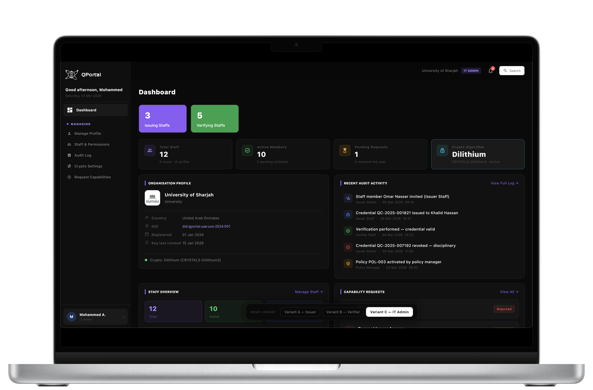
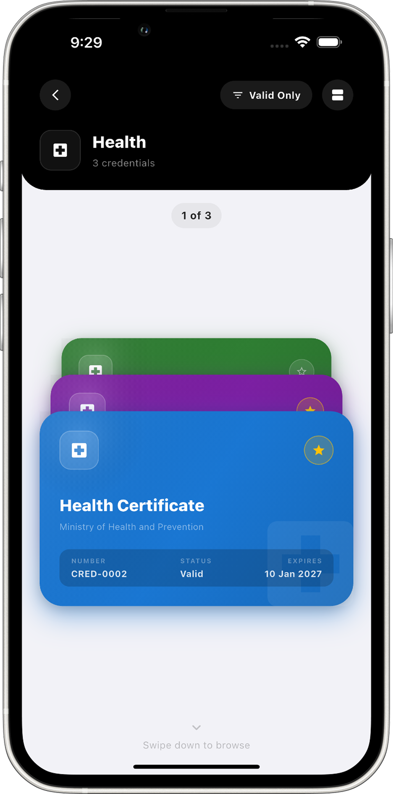
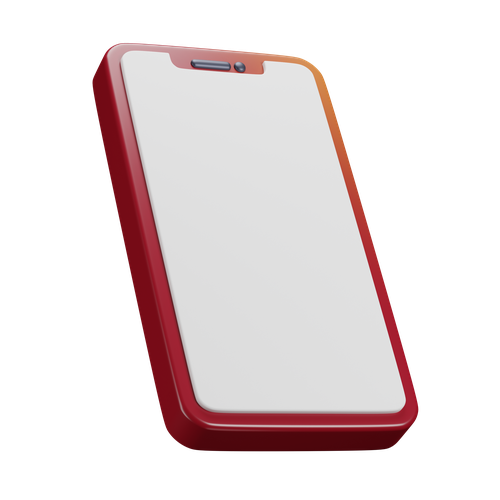

Quantum-Resistant
Credential Management
Bridging academic research with enterprise security. QChain upgrades Hyperledger Fabric with lattice-based cryptography, ensuring university degrees and corporate certificates survive the post-quantum era.


Designed for Academia. Built for Enterprise.
Immutable Academic Integrity
Universities need guarantees that issued degrees cannot be forged. Our hybrid IPFS model ensures degrees are easily verifiable while maintaining strict cryptographic proof.

Enterprise-Ready Security
By utilizing ML-DSA (Dilithium) standards natively within Fabric, companies can trust that their organizational credentials won't be broken by Shor's algorithm tomorrow.

Seamless User Experience
Complex cryptography is completely abstracted. Issuers use a sleek web portal, while students manage and present credentials via an intuitive mobile wallet.